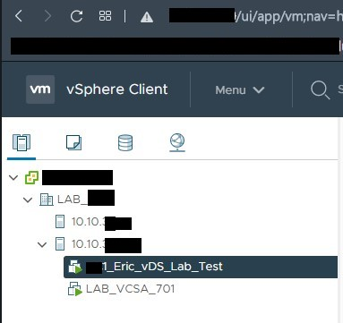
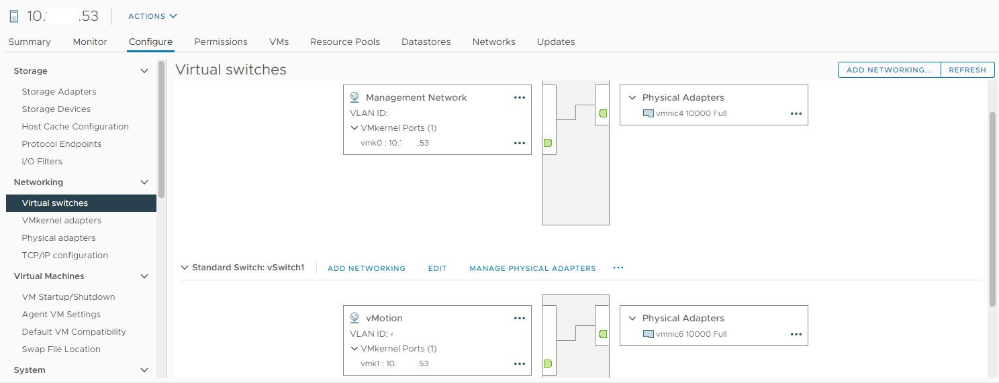
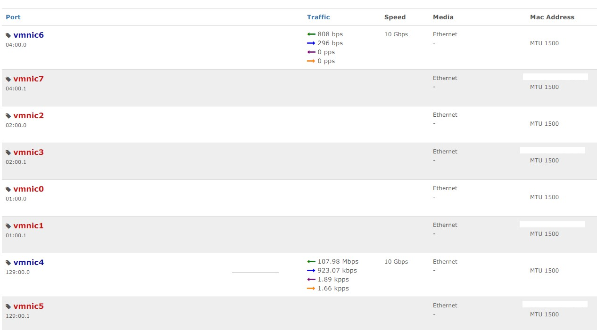
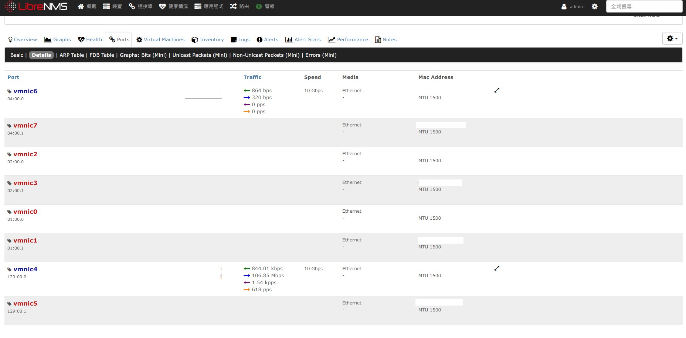
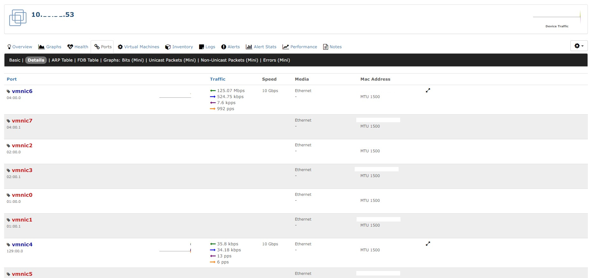

【實驗記錄】到底 VM 在關機 (PowerOff) 狀態搬移
Contents
LAB 架構圖

寫日記
這兩台 ESXi 主要是拿來測試 vSS 轉 vDS 用的。因為 DC1 10.x.x.53 ESXi Host 在 2021.02.19 發現 GBIC 故障
DC1 10.x.x.54 ESXi Host 2021.02.12 發生 DIMM_A3 Multi-bit memory errors (error rate 上升) + 2021.02.19 Power Supply 1 (PS1) 死去。兩台共通點都是 2021.01 新上櫃 的，所以請廠商更換料件後放置觀察一周
網路環境設定

簡單來說就是將兩個 VMKernel Adapter 分別走兩個獨立的實體網 port 出去。這麼做的原因是要透過實體 port 觀察流量
vmnic 4 -> Management (vSwitch0)
vmnic 6 -> vMotion (vSwitch1)
透過 LibreNMS 觀察 DC1 10.x.x.53 ESXi Host。
不過在施工之前要先請網路組開通實體伺服器第二個網 port (即 vmnic 6) 連接到實體 Switch 的介面，要可以接受 VLAN ID 46
實驗
PowerOff VM 從 54 轉到 53 需要等待大約 5 分鐘 LibreNMS 才會去抓取資料 (資料持續記錄，並不會是抓取當下的流量)

Ans: 關機狀態下走 Management (vmkernel)
PowerOff VM 從 53 轉到 54

Ans: 關機狀態下走 Management (vmkernel)
Power"ON" VM 從 54 轉到 53

Ans: PowerON 狀態下走 vMotion
Author 老柯
LastMod 2021-02-24